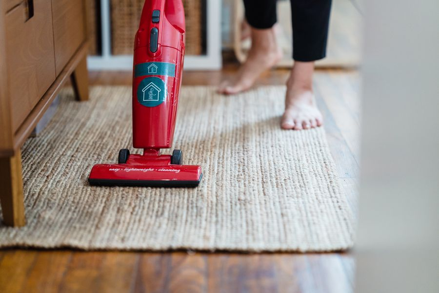

El mejor
Si tienes mascotas o mucha superficie, es donde la diferencia se nota todos los días. Si vives en un piso pequeño, te sobra.

| Succión | 240 vatios-aire |
|---|---|
| Autonomía | Hasta 60 minutos (modo suave) |
| Depósito | 0,77 litros |
| Ciclones | 14 |
| Filtración | 99,99 % de partículas de hasta 0,3 micras |
| Detección | Láser en suelo duro y sensor que cuenta partículas |
| Carga | 4,5 horas |
Datos de la ficha oficial del fabricante (dyson.es — V15 Detect), consultada el 2026-09-02. No publicamos ningún dato que no podamos comprobar ahí.
No ponemos precios porque cambian cada día. Lo ves actualizado al entrar.
¿Comparándolo con otros? En la guía de los mejores aspiradores escoba en calidad-precio están las cuatro opciones de la categoría: la mejor, dos de gama media y la mejor barata.